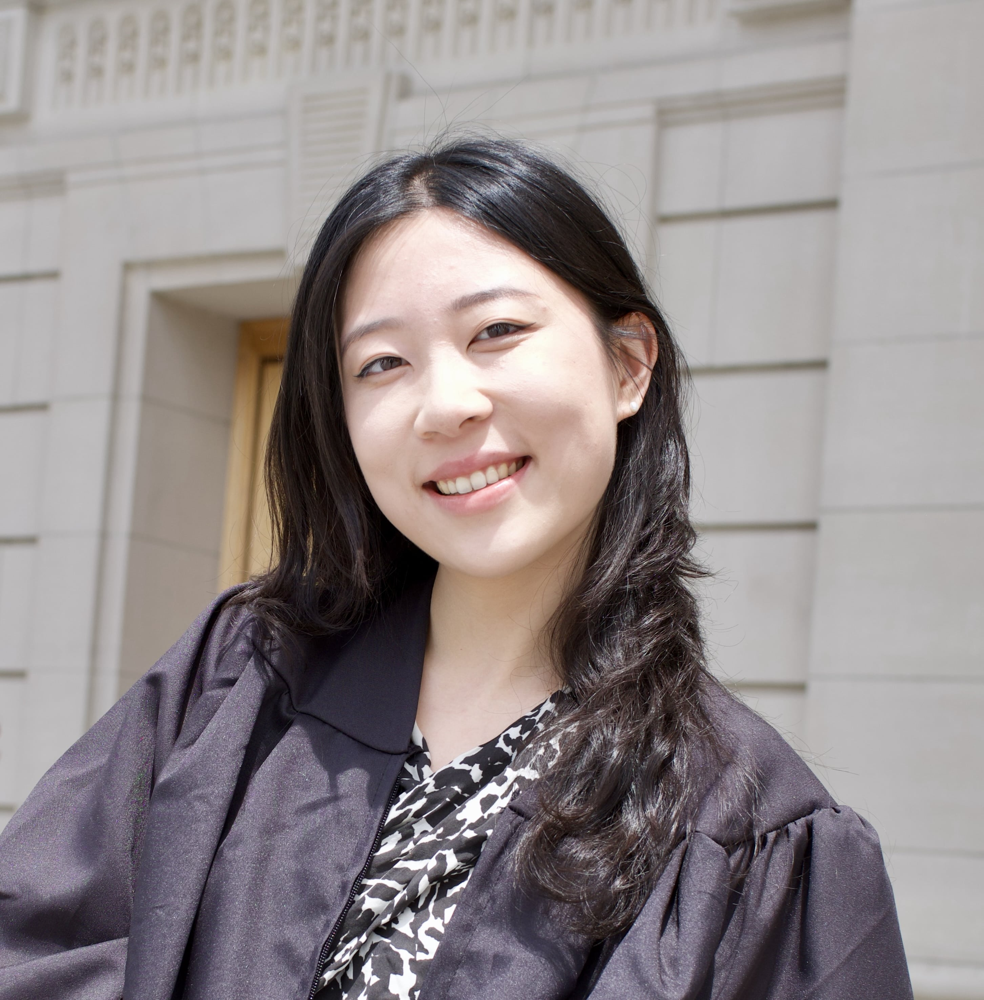

Hi, I'm Alexa. I'm a Research Intern at Redwood Research. I'm currently thinking about various topics related to AI control, i.e. making safety measures robust to intentional subversion by powerful AI systems.
My research is largely motivated by mitigating worst-case risks from AI. Apart from this, I'm also interested in creating better futures and a better science of non-human minds.
Before Redwood, I worked at Forecasting Research Institute; before that, I explored research on cooperative AI, LLM lie detection.
I have a BA in Physics and Philosophy from Yale. I wrote my thesis on the rationality of value change, advised by the wonderful L.A. Paul.
I grew up in China and Singapore. Outside of research, I enjoy reading and writing poetry, photography, (literal and figurative) random walks, and live music. I'm always excited to connect with machine learning (safety) researchers and philosophers or anyone curious about my work.
